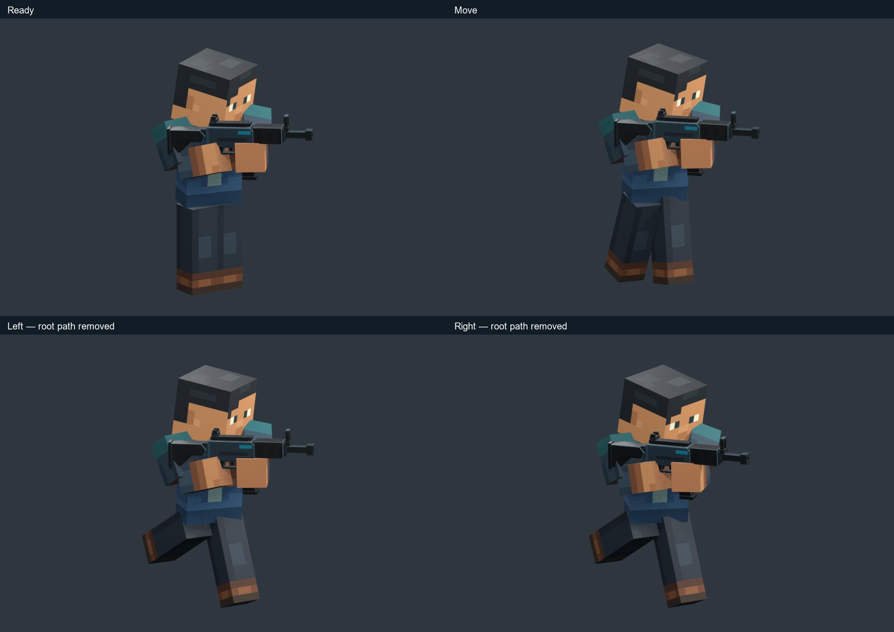
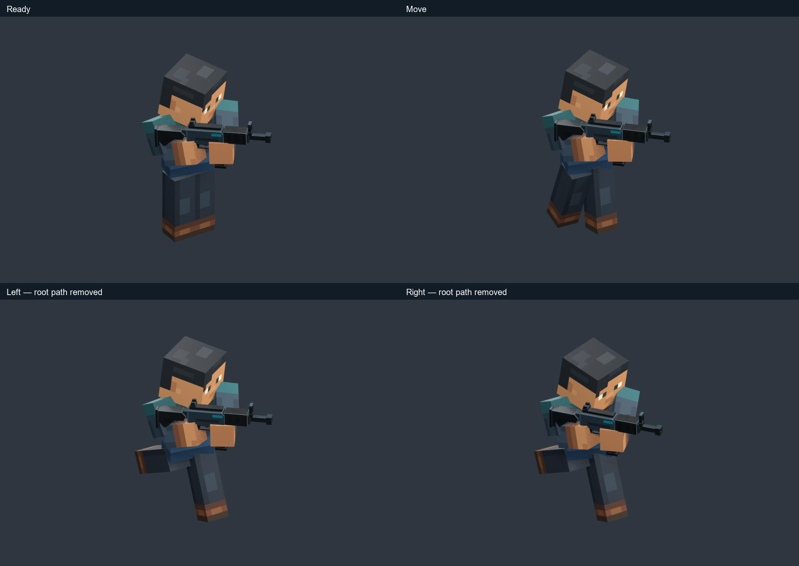
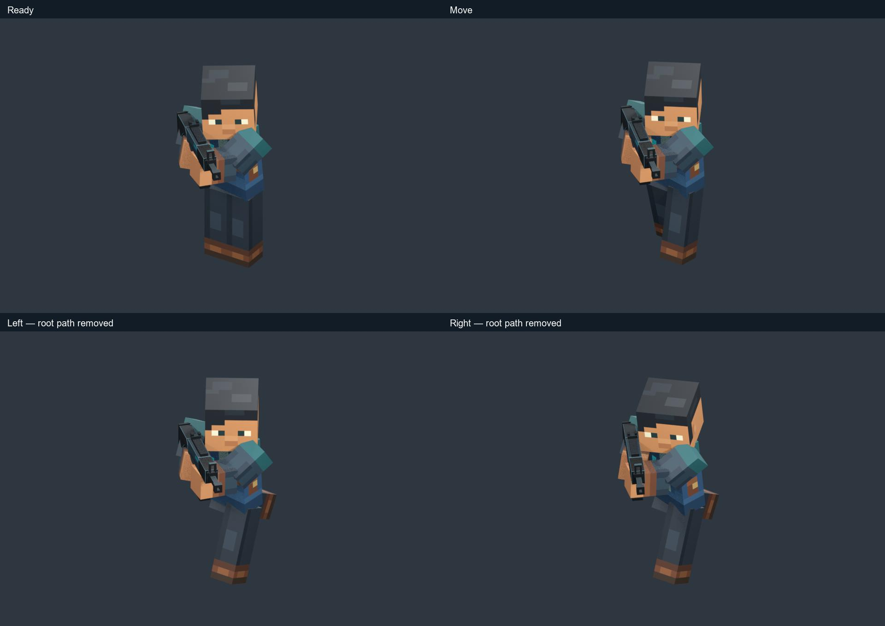
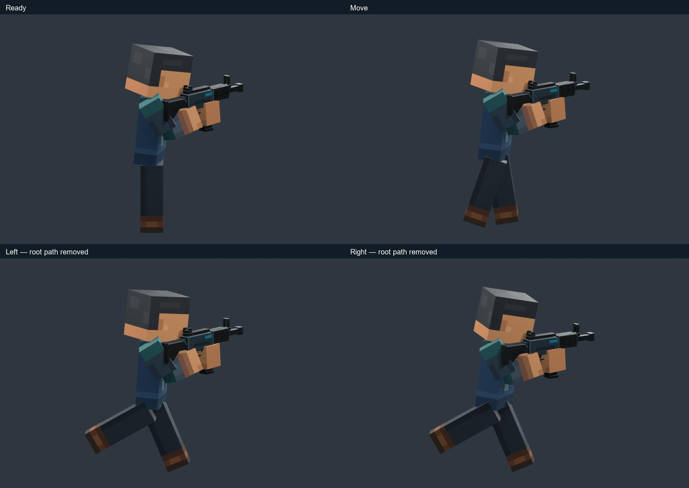
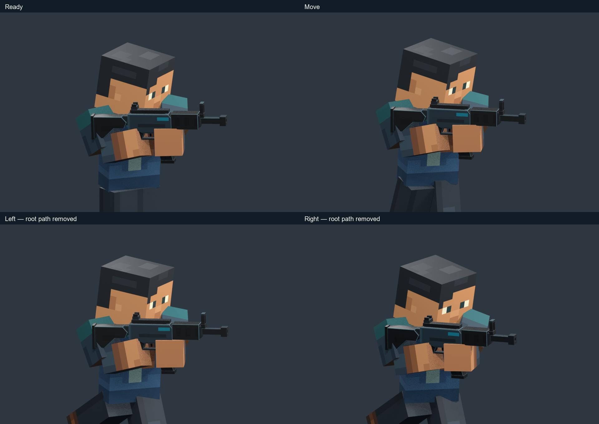
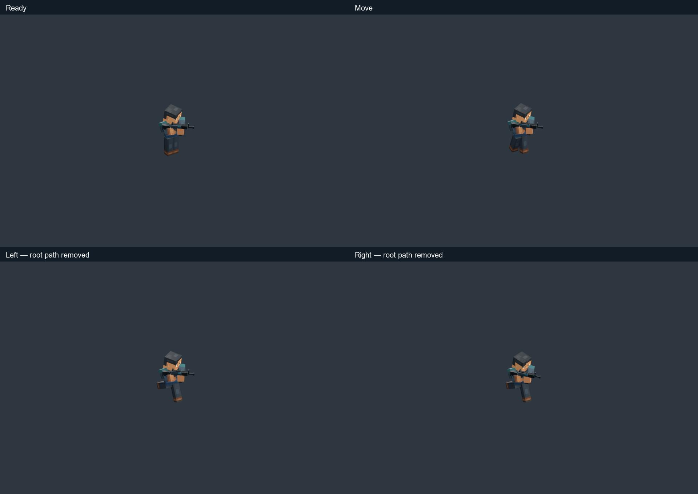
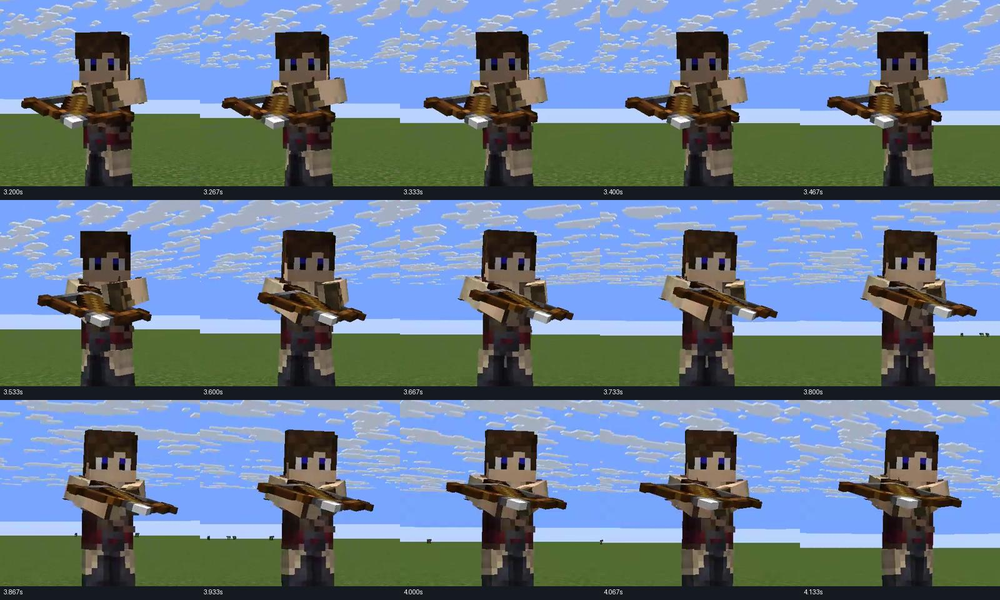
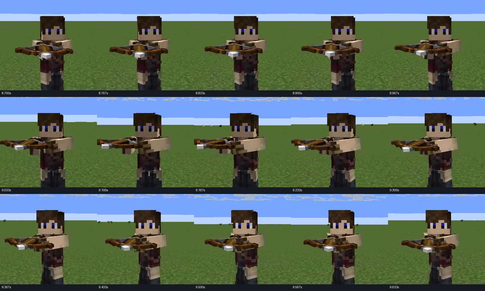
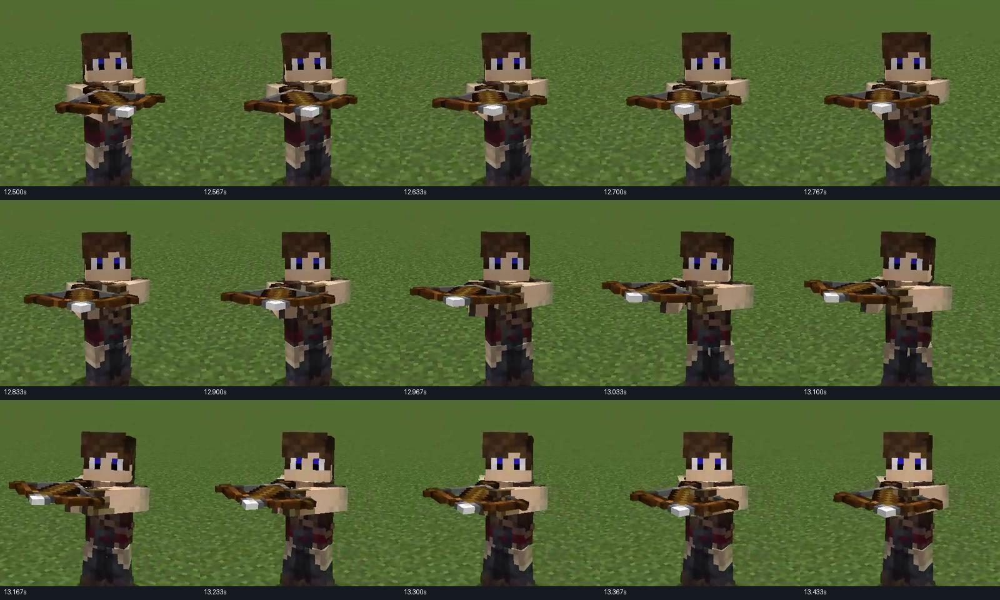

Living weapon hold & aim-around
Right-hand anchor, following support elbow, continuous steering. Verdict: more study work is needed before production integration.
Editable Blender study · Full report · Validation
Primary crossbow reference
Original 30 fps / 15.43 s. Camera movement prevents reliable recovery of world-space circles or exact response delays.
Steering: close A/B inspection
A: R8 hold with the same walk. B: R9 chest/head/elbow response. Root travel is removed here to make the upper body inspectable.
Actual circular steering path
12-second figure eight exercises both turning directions. The path is authored for this test. Ground contact and planted turning remain unproven.
Living ready
Moving ready
The support-arm follow reads in close view but is understated at gameplay scale. Stock/hand overlaps still need work. Technical continuity does not constitute artistic approval.
Front inspection

Ready / Move / Left arc / Right arc. Left and right are shown with root travel removed.
Gameplay inspection

Ready / Move / Left arc / Right arc. Left and right are shown with root travel removed.
Opposite inspection

Ready / Move / Left arc / Right arc. Left and right are shown with root travel removed.
Side inspection

Ready / Move / Left arc / Right arc. Left and right are shown with root travel removed.
Close inspection

Ready / Move / Left arc / Right arc. Left and right are shown with root travel removed.
Distance inspection

Ready / Move / Left arc / Right arc. Left and right are shown with root travel removed.
Reference sweep evidence



Ordered, timestamped frames from the actual supplied video.